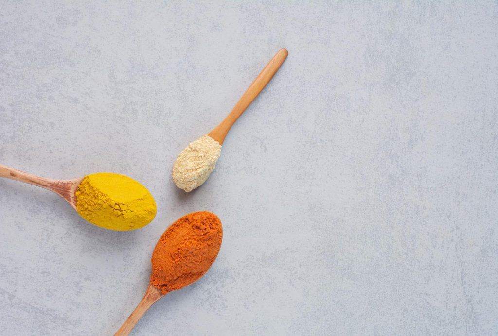

Manfaat Temulawak dan Kunyit Putih bagi Kesehatan
Diposting pada 11.44 WIB, 4 April 2022

Temulawak dan kunyit putih telah lama digunakan sebagai obat tradisional yang digunakan untuk
berbagai masalah kesehatan. Berbeda dengan kunyit biasa, kunyit atau kunir putih memiliki bentuk
mirip dengan kunyit namun punya warna daging yang putih dan tekstur yang lebih lembut.
Ada banyak manfaat temulawak dan kunyit putih bagi kesehatan, yang bisa kamu peroleh baik dengan
cara direbus ataupun dikonsumsi dalam bentuk suplemen. Apa saja manfaat temulawak dan kunyit putih
bagi kesehatan? Yuk, simak selengkapnya di bawah ini!
Bantu atasi masalah pencernaan
Melansir dari Wild Turmeric, kunyit putih mampu mengurangi refluks asam lambung secara signifikan
dan telah terbukti dapat menyembuhkan gejala maag. Kunyit putih juga telah digunakan sejak zaman
dahulu sebagai obat untuk mengatasi masalah pencernaan lainnya seperti kehilangan nafsu makan,
cacingan, perut kembung, dan buang air besar tidak teratur. Tak hanya itu, kunyit putih juga dapat
mencegah radang usus yang disebabkan oleh stres.
Sebagai antiinflamasi alami
Peradangan dalam tubuh berfungsi sebagai bentuk perlindungan tubuh terhadap serangan virus, bakteri,
hingga benda asing. Namun, meskipun peradangan punya peran penting bagi tubuh, peradangan jangka
panjang bisa menyerang jaringan tubuhmu sendiri.
Manfaat temulawak dan kunyit putih dapat membantu tubuh mendeteksi racun penyebab peradangan, sehingga
dapat mengurangi peradangan dengan cepat. Khasiat ini bisa kamu dapatkan dari penggunaan eksternal
maupun mengonsumsi rebusan temulawak dan kunyit putih.
Meredakan rasa nyeri
Manfaat temulawak dan kunyit putih lainnya yang tidak kalah menakjubkan adalah meredakan nyeri.
Kunyit putih mempunyai sifat analgesik sehingga cukup efektif dalam mengurangi rasa sakit.
Dalam sebuah studi yang diterbitkan dalam Complementary Therapies in Medicine, kandungan kurkumin
dalam temulawak dan kunyit putih dapat mengurangi nyeri PMS, nyeri payudara, sakit kepala, hingga
sakit punggung. Sementara itu, penelitian lainnya juga menunjukkan temulawak dan kunyit bisa membantu
meringankan rasa sakit terkait operasi pencabutan gigi bungsu.
Meningkatkan daya tahan tubuh
Kerusakan oksidatif dari paparan radikal bebas diyakini sebagai salah satu dari penyebab banyak penyakit.
Di sinilah peran dari antioksidan, yang melindungi sel-sel tubuh dari radikal bebas.
Kurkumin dalam temulawak dan kunyit merupakan antioksidan kuat yang dapat menetralkan radikal bebas.
Ditambah lagi dengan sifat antiinflamasi di dalamnya, temulawak dan kunyit putih dapat bertindak
sebagai imunomodulator yang meningkatkan kekuatan sistem kekebalan tubuh.
Antioksidan tinggi juga bisa ditemukan dalam vitamin daya tahan tubuh, seperti Vitalong C (Rp48.500).
Baik untuk daya tahan tubuh, Vitalong C mengandung vitamin C 500 mg yang aman dikonsumsi setiap hari.
Mencerahkan kulit dan mencegah munculnya jerawat
Selain bermanfaat bagi kesehatan, kunyit putih dan temulawak juga berperan dalam
kecantikan kulitmu. Apa saja manfaat temulawak dan kunyit putih untuk kecantikan?
Melansir dari Healthline, kandungan antioksidan dalam kunyit bisa buat kulitmu mencerahkan warna kulit
sekaligus membuat wajahmu glowing alami. Sementara itu, sifat antiinflamasi dan antibakteri di
dalam masker kunyit juga bisa membasmi bakteri penyebab jerawat.
Sebuah studi baru-baru ini menemukan bahwa minyak esensial kunyit dalam formulasi
lotion dapat mencerahkan kulit dalam waktu tiga minggu dengan hasil yang bertahan lama.
Efek ini juga bisa kamu dapatkan dari masker kunyit yang dicampur dengan bahan alami
lainnya seperti yogurt dan madu untuk berikan kelembapan ekstra.
Demikianlah sejumlah manfaat temulawak dan kunyit putih untuk kesehatan. Dan segera dapatkan informasi lainnya seputar kesehatan hanya di goSehat.